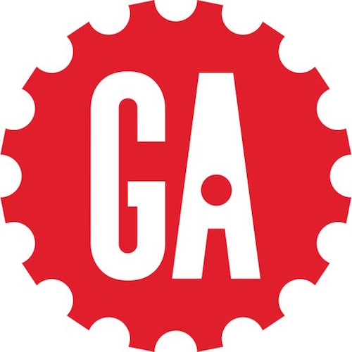
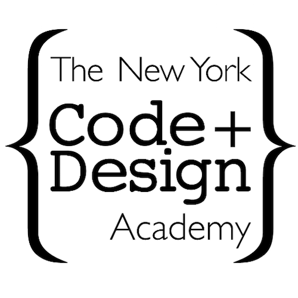

Hello I'm Megan! I have a diverse background with experience in first aid, business development, non-profit sector, and education. Whether its technology policy or development, I enjoy website development, nerding out over how the Internet works, and writing about the newest methods being used by cyber criminals.
Education
York University
B.A. International Studies
George Washington University
M.A. Security Policy Studies

General Assembly
Certificate, Front-End Web Development

New York Code + Design Academy
Certificate, Web Development Intensive
Resume
United Nations Association of the National Capital Area, Washington D.C.
Director of Global Education, Jul. 2015 - Aug. 2017
- Developed, implemented, and managed the strategic direction and development of the Global Classrooms DC (GCDC) education program, impacting over 3,000 students in grades 5-12
- Organized three annual Model United Nations conferences for over 700 students and 80+ educators, including a year-end conference at the U.S. Department of State and Pan American Health Organization (PAHO)
- Oversaw, managed, and trained a team of 4-6 staff and 70+ volunteers
George Washington University's Center for Cyber and Homeland Security, Washington D.C.
Research Assistant, Program on Extremism (Part-Time), Sep. 2015 - Dec. 2016
- Utilized open-source research materials and court documents to manage a large database of over 100 U.S. arrested persons; researched and updated case files on individuals involved in non-violent and violent extremism activities
- Researched and prepared briefs for the Director and Deputy Director following extremist attacks, including the November 2015 attacks in Saint-Denis, Paris as well as the June 2016 Orlando nightclub shooting